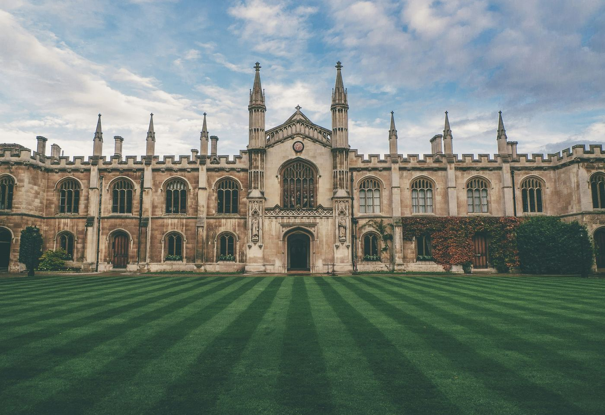

Oxford Royale — University of Oxford
- Oxford
- Возраст 13–18 лет
- Резиденция (колледж)
Академическая летняя школа на территории University of Oxford — основан в 1096 году, старейший университет англоязычного мира. Студенты живут в настоящих корпусах оксфордских колледжей (Balliol, Queen's, Keble, St Hugh's или St Peter's) и в перерывах между занятиями могут гулять по мощёным улочкам, заниматься пантингом (катанием на плоскодонных лодках с шестом) по реке или изучать библиотеку Bodleian Library.
40ч. академических занятий
3даты начала
5жилых колледжей
13предметных областей
Курсы: Архитектура и дизайн · Медицина · Инженерия и технологии · Экономика и финансы · Право и политика · Бизнес и предпринимательство и другие
Длительность: обычно 2, 4 или 6 недель каждое лето — уточните у нас точные даты и стоимость для года, на который бронируете.